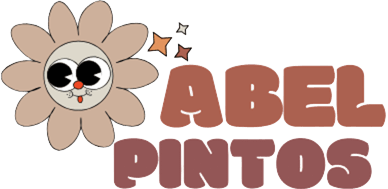

Abel Federico Pintos es un cantante, compositor y productor
argentino de pop latino. Comenzó su carrera musical a los siete
años, tras ser escuchado por Raúl Lavié en un homenaje a José de
San Martín realizado en su colegio. En 1997, presentó su primer
álbum musical, Para cantar he nacido. El 25 de enero actuó en el
escenario mayor de Cosquín, donde realizó la presentación de su
primer disco. Contó con 18 canciones de autores reconocidos como
Horacio Banegas, Carlos Carabajal, Peteco Carabajal, entre otros.
El 1 de marzo de 1998, asistió al cierre de este espectáculo
organizado por la Municipalidad de la Ciudad de Buenos Aires
compartiendo escenario con León Gieco. En 1999, sacó a la venta su
segundo trabajo discográfico bajo el nombre de Todos los días un
poco y en 2001 dio a conocer su álbum "Cosas del Corazón"
compuesto por trece temas.
En julio de 2012, Abel presentó "Sueño dorado", un Cd+Dvd que resume los 15
años de carrera del músico. Al año siguiente recibió los premios Gardel a Álbum del año, Canción del año,
Mejor álbum artista pop masculino y el mayor premio, el Gardel de Oro. Lanzó un nuevo disco en 2013,
titulado "Abel", y compuesto por 13 canciones.
